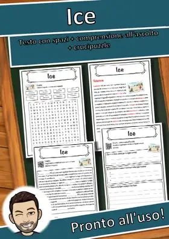
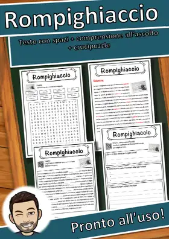
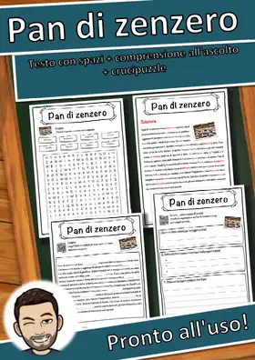
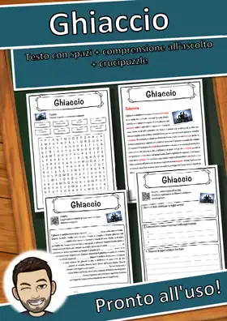
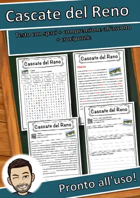
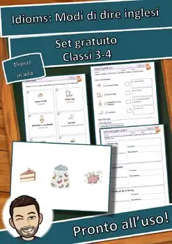
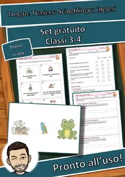

Da un insegnante per gli insegnanti
Pronto per la classe.
In cinque minuti.
Oltre 2.900 schede in italiano, pronte da stampare e con soluzioni: testo informativo con spazi vuoti, comprensione all'ascolto con codice QR e crucipuzzle.
Vai al mio negozio su edukiTutti i materiali
- 2.900+ schede
- Soluzioni incluse
- Senza preparazione: stampa e usa
- Grades 1–2


Senza preparazione
PDF da stampare e usare subito. Ogni scheda contiene le soluzioni: ideale per il lavoro autonomo o una supplenza.
Pensato per la classe
Linguaggio chiaro e semplice, consegne passo dopo passo ed elementi di autocorrezione.
Leggere e ascoltare
Il testo è registrato: un codice QR porta all'audio in italiano (MP3 gratuito, senza registrazione).
Natale e inverno
Natale, neve, sport invernali e Capodanno: schede per la stagione fredda.
Winterthur – Scheda didattica classe quarta e quinta: testo con spazi vuoti e crucipuzzle

Ice – Scheda: testo con spazi vuoti, comprensione all'ascolto e crucipuzzle
Treno a levitazione magnetica – Scheda: testo con spazi vuoti, comprensione all'ascolto e crucipuzzle

Rompighiaccio – Scheda: testo con spazi vuoti, comprensione all'ascolto e crucipuzzle

Pan di zenzero – Scheda: testo con spazi vuoti, comprensione all'ascolto e crucipuzzle
Hockey su ghiaccio – Scheda: testo con spazi vuoti, comprensione all'ascolto e crucipuzzle

Ghiaccio – Scheda: testo con spazi vuoti, comprensione all'ascolto e crucipuzzle

Cascate del Reno – Scheda: testo con spazi vuoti, comprensione all'ascolto e crucipuzzle
Autunno
Zucche, vendemmia, foglie e feste d'autunno: schede per i mesi autunnali.
Novità
Nuovi materiali
Qui compaiono per prime le mie schede più recenti. L'elenco si aggiorna automaticamente.
Spunti per parlare: Lo spazio – Spunti per parlare – Classi 1–4
Memory: La fattoria – Giochi di immagini e parole – Classi 1–4
Io ho, chi ha? Il corpo e i sensi – Giri di lettura – Classi 1–4
Escape-Room Inverno, italiano classe prima: 6 stazioni (GRATIS)
Carte con le mollette: Pirati – Carte con le mollette – Classi 1–4
Leggere, colorare e incollare: Il corpo e i sensi – Leggere e colorare – Classi 1–4
Domino: La fattoria – Giochi di immagini e parole – Classi 1–4
Io ho, chi ha? Pasqua – Giri di lettura – Classi 1–4
GRATIS
Queste schede sono attualmente gratuite nel mio negozio. L'elenco si aggiorna ogni giorno.

Laboratorio di inglese: Read and Colour: Leggi e colora – Set gratuito (GRATIS)

Laboratorio di inglese: Idioms: Modi di dire inglesi – Set gratuito (GRATIS)

Laboratorio di inglese: I have, who has? gratis (GRATIS)

Laboratorio di inglese: Don't say it: Descrivi la parola – Set gratuito (GRATIS)

Laboratorio di inglese: Tongue Teasers gratis (GRATIS)

Laboratorio di inglese: All about me: Mi presento – Set gratuito (GRATIS)

Officina di classe: Calendario dei compleanni gratis (GRATIS)

Officina di classe: Poster motivazionali per la classe – Set gratuito (GRATIS)
Schede di lettura
Testo informativo con spazi vuoti e banca delle parole, comprensione all'ascolto con codice QR (audio gratuito) e crucipuzzle, con soluzioni.

Computer – Scheda didattica classe quarta e quinta: testo con spazi vuoti e crucipuzzle

Alleanza del Centro – Scheda didattica classe quarta e quinta: testo con spazi vuoti e crucipuzzle

Strix aluco – Scheda didattica classe quarta e quinta: testo con spazi vuoti e crucipuzzle

Solanum lycopersicum – Scheda didattica classe quarta e quinta: testo con spazi vuoti e crucipuzzle

Salix caprea – Scheda didattica classe quarta e quinta: testo con spazi vuoti e crucipuzzle

Dasypodidae – Scheda didattica classe quarta e quinta: testo con spazi vuoti e crucipuzzle

Bubo scandiacus – Scheda didattica classe quarta e quinta: testo con spazi vuoti e crucipuzzle

Bubo bubo – Scheda didattica classe quarta e quinta: testo con spazi vuoti e crucipuzzle
Per tema
Tutte le schede di un'area in un'unica pagina.
Per classe
Scegli una classe per vedere le schede adatte.
Altre lingue
Questa pagina mostra solo materiali in italiano. Qui trovi i miei materiali in inglese, spagnolo, francese e tedesco.
Deutsch
Oltre 6.900 materiali in tedesco con soluzioni, disponibili su eduki.
Vai alla pagina in Deutsch →English
Letture, cacce al tesoro di lettura e laboratori di matematica in inglese, disponibili su TpT. · 5.876 materiali
Vai alla pagina in English →Español
Letture e cacce al tesoro di lettura in spagnolo, disponibili su eduki e TpT. · 3.641 materiali
Vai alla pagina in Español →Français
Schede in francese con testo con spazi vuoti, ascolto e crucipuzzle, disponibili su eduki. · 3.488 materiali
Vai alla pagina in Français →Domande frequenti
Dove posso acquistare le schede?
Le schede in italiano sono in vendita nel mio negozio “Snice” su eduki. Ogni pagina del materiale ha un pulsante che porta direttamente al prodotto.
Per quale classe?
La classe indicata su eduki è riportata in ogni pagina del materiale. Il testo è scritto in un linguaggio chiaro e semplice.
Le soluzioni sono incluse?
Sì, ogni scheda contiene le soluzioni.
In che formato?
File PDF da stampare, senza preparazione.
Ci sono materiali in altre lingue?
Sì: in “Altre lingue” trovi i miei materiali in inglese, spagnolo, francese e tedesco.
Da un insegnante per gli insegnanti
Sono un insegnante in Germania e creo i materiali prima di tutto per i miei alunni. Ogni scheda viene controllata prima della pubblicazione, così prepari meno e insegni di più.